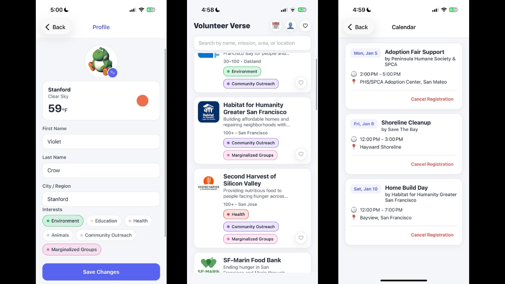
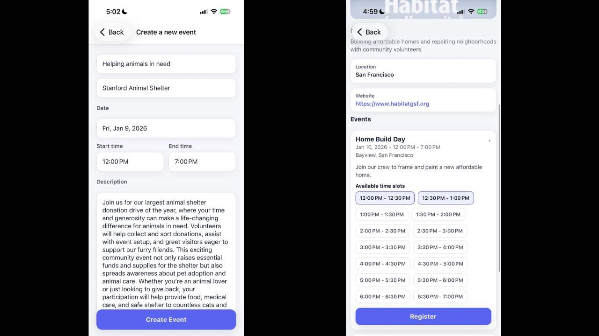

VolunteerVerse

Why We Built It
Finding ways to volunteer in your own neighborhood shouldn't require detective work. Usually, people looking to help out have to piece together information from across Instagram stories, local Facebook groups, and outdated nonprofit websites.
On the other side, local organizations often struggle to get the word out and keep track of who has committed to helping. We built VolunteerVerse so both sides could meet in one place: organizations can create profiles, post upcoming events, and track signups, and volunteers can discover causes they care about, sign up for shifts, and keep track of their volunteering schedule.
What I Built
Working on a three-person team for CS 147L, I worked across design and engineering. I started by scoping out our core features and designing the initial app screens, then spent most of the project building the React Native frontend and hooking it up to our Supabase database.
I built the login, authentication, and onboarding flows so individual volunteers and local organizations could set up and manage their profiles.
I built the real-time event creation and registration system. When an organization posts a new volunteer opportunity, it immediately appears in the app for volunteers to view. Volunteers can sign up with a tap and view all of their upcoming shifts in one place.


Focusing on What Matters
With a small team and 4 weeks to build, our biggest challenge was deciding where to spend our time.
Early on, we imagined the main screen being a map view so volunteers could browse opportunities by location. While this was a cool idea, we ran into issues with our free map APIs. Rather than spending time re-working this functionality, we chose to pivot to a more straightforward UX. Our final product was database-backed and fully usable, meaning user and org accounts, event creation, and shift signups worked end to end.